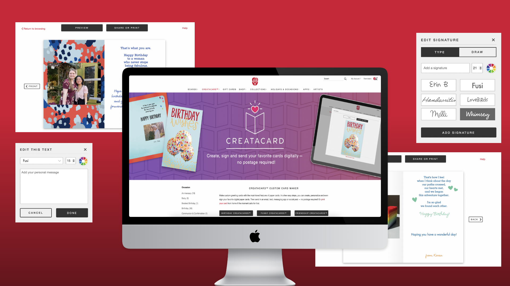
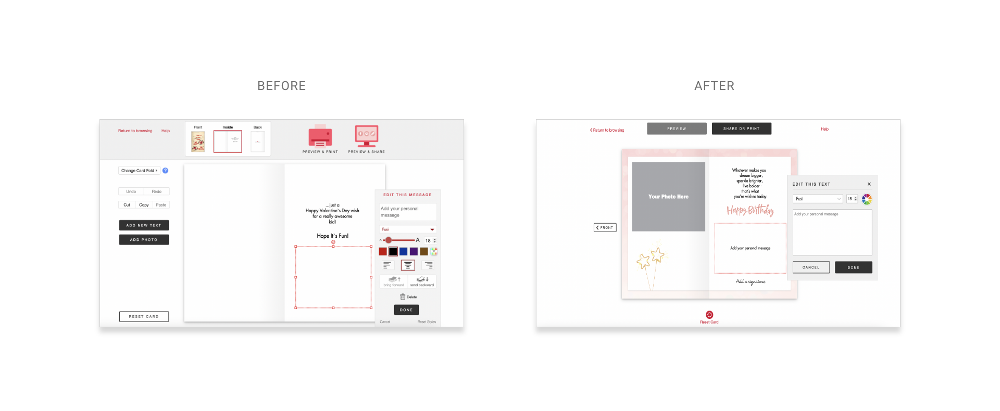
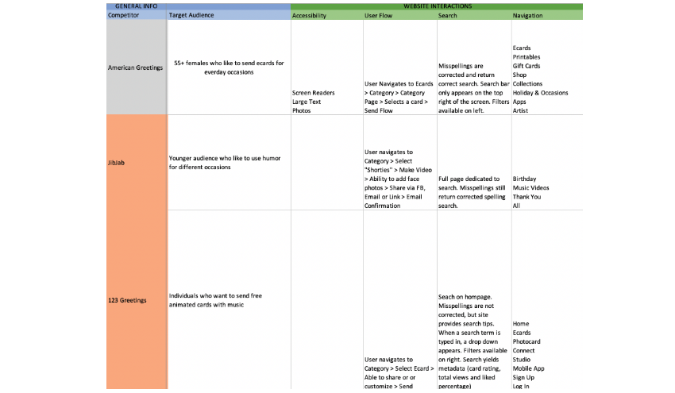

American Greetings Creatacard
The celebrations destination
American Greetings is a global leader in the Celebrations marketplace. While they have a variety of physical goods, American Greetings also has a digital business subsidiary, American Greetings Interactive (AGI). AGI provides digital greetings within across many brands including: American Greetings, SmashUps, and Blue Mountain.
Creatacard is a personalized digital greeting that allows users to add messages, photos, and even music to achieve a more personalized touch. These digital greetings are aimed toward creating unique experiences and interactions while celebrating the occasion. With personalizations, users can create the right look and feel for their recipient.
Creatacard, previously Printables, was replatformed to give users the best experience by introducing a updated, user-forward design and user-friendly features.
Role
UX Research
Wireframing
Client
American Greetings Interactive
Duration
9 months
Problem Statement
Feedback from users indicated that the current experience, Printables, was too overwhelming due to an overload of complex features. With no ability to save drafts and a lack of tutorial, users didn't feel confident about making advanced edits, nor did they understand capabilities of the features provided. As a result, most users sent or printed unmodified ecards, and decided to forgo any personalization whatsoever.
Team
During this design process, I worked cross-functionally with several teams ranging from business, creative and development. This project had a large scope and several features, so our team worked iteratively to define, scope, and wireframe. During the design process, I worked closely with a Visual Designer and a Front-end Developer to align branding and UX needs. Feedback from the developers would often change the scope of the project, as technical limitations would sometimes change the design. The UX team would then work together to brainstorm, test and put together new user-driven solutions.
Research
Phase 1: User Analytics
During the initial stages of the research phase, the UX team examined user behavior through existing data points and tracking on the current platform. The results took the team by surprise, and we knew we had our work cut out for us.
- 90% of users did not make any modifications to their cards before printing or sending.
- Users would often start a task of personalizing the card, before abandoning.
- Users were split between two send methods: sharing online and printing at home.
Phase 2: Competitive Analysis
Following the user analytics, there was a understanding that a number of features needed to be changed. I started compiling a competitive analysis, analyzing the American Greetings platform against three competitors. Some key takeaways I learned were:
- Competitors had set amounts of customization, and most aspects of the greeting were predetermined. While this seemed limiting, this actually allowed users to make edits without decision fatigue.
- American Greetings lacked modern, advanced features. Two key features were saving drafts and adding music. The ability to save drafts allowed users to feel more confident and spend more time during the customization process.
Phase 3: Survey
Our research team then launched a user survey, which gathered over 200 insights. Through this, I discovered three key insights:
- Our user base, which skewed older, tended to be less tech-savvy and were easily overwhelmed when too many elements appeared on the screen.
- Users were more likely to become frustrated or exit when the process took too long.
- Users tended to utilize online ecards to form a sense of closeness, especially those that were unable to travel during the pandemic.
Through these insights, our team knew we had to create a new experience that prioritized simplicity and efficiency, while still allowing users to feel connected to their loved ones.
Solution
Wireframes
Prototype #1
Prototype #2
How it works
Add a photo: Users previously enjoyed the ability to add photos to their printable card, however, the lack of structure and placement of the photos was overwhelming. Without a tutorial, users were unsure of how to use some of the features.
One of the most underutilized features on this modal was the Move buttons. Since the ecard was designed for desktop, most users would click and drag their photos into their desired areas. The move buttons would often cause frustration, as they would only move the photo pixel by pixel, causing a a very time consuming and frustrating experience.
The buttons on the new experience were also an area that needed to be improved upon. Cancel and Reset styles were text links, however without a color indicator or underline, they do not look clickable. They're indistinguishable from the labels "Rotate", "Move" and "Layers", which were not clickable. This caused confusion and would often take extra time for users to read through before taking action.
With the new experience, each button is labeled and has a more uniform style. The circular button shape was chosen to expand the click area, and to give each button a more consistent look. The labels removes ambiguity from the icons, and color indicates which button is selected. To save space and reduce clutter, sliders are only visible when certain buttons are selected.
Message: Users previously enjoyed the ability to add or edit messages in their printable card, however, as pre-written card text was modified the American Greetings brand was not preserved.
While the ability to edit and add messages was a powerful tool, the design and features needed some improvements. The biggest flaw was of this modal was the sizing of the text. Users were only able to use the slider to determine font size, making it frustrating to select a specific font size. The idea was that users would use the slider, then the arrows to select a certain font size. However, in practice, this was often frustrating and time consuming.
Lessons Learned
With the launch of the new Creatacard product, the team aimed to monitor user behavior and feedback. The initial launch garnered a positive response, however, there were several areas upon which the team could have improved upon.
- Surveys were the main source of user feedback we considered. However, there were many questions that were left unanswered due to survey limiations. Moderated usability studies could have been leveraged to better understand where users felt overwhelmed.
- The overhaul of the feature took several months and design iterations. While it was nice to completely replatform, the roll-out could have been done more iteratively. This would have allowed design to pursue A/B testing that validated our hypothesis, and slowly acclimated our users to the change.
Conclusion
Creatacard launched on the American Greetings website in June 2022 and was met with overall positive feedback. Following the launch, American Greetings noticed an increase in their NPS score, and attributed this to the replatforming. Although the replatform has been completely, the team is still pursing adding additional features to make the user experience the best it can be.
Next Steps
While MVP of the Creatacard was focused on simplicity, the team aims to release new features to make sure they are on par with competitors with similar offerings. Potential features include:
- Saving a draft: Saving progress would allow users to make more complex edits in several different sessions. This would also encourage users to revisit and frequent the site more often.
- Music: Adding music could be allow users to display another level of customization.
- Gifting: Allowing users to add an e-gift could increase revenue and sending frequency.
Thank you for exploring American Greetings Creatacard! Hopeful you enjoyed this case study.